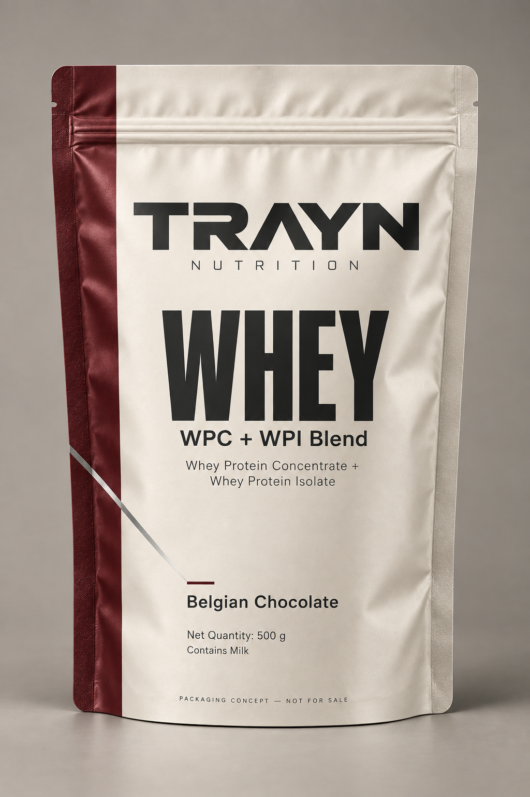
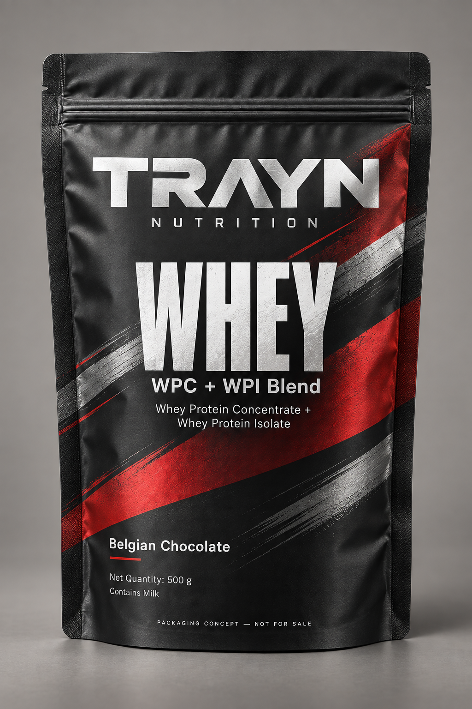
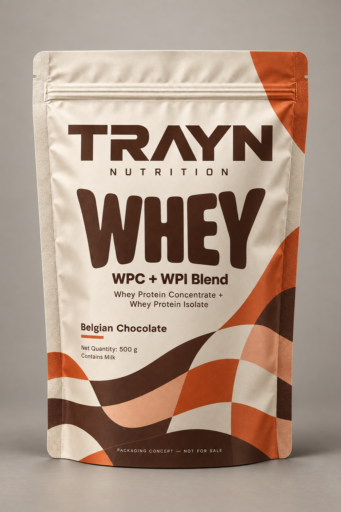
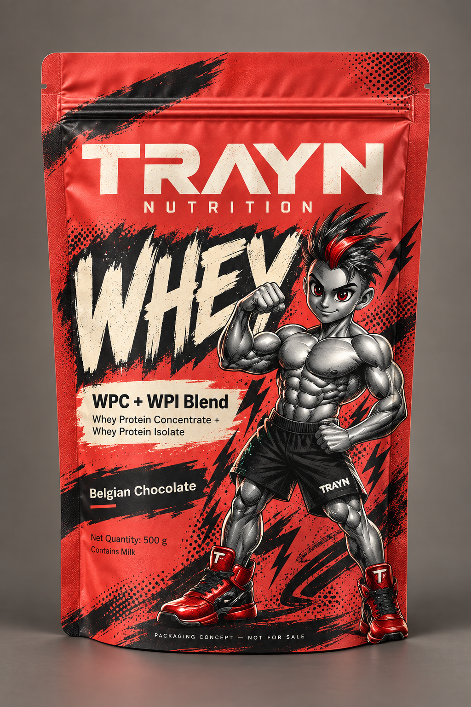

01 / Precision
Professional. Ivory, oxblood and disciplined typography.
TRAYN / PACKAGING EXPLORATIONS
Four directions for the same Belgian Chocolate 500 g WPC + WPI Blend. Click a render to inspect the full-size image.

Professional. Ivory, oxblood and disciplined typography.

Athletic. Gunmetal, red and expressive silver graphics.

Expressive. Warm colour, rounded typography and abstract patterns.

Playful. Character illustration, comic texture and adult gym culture.